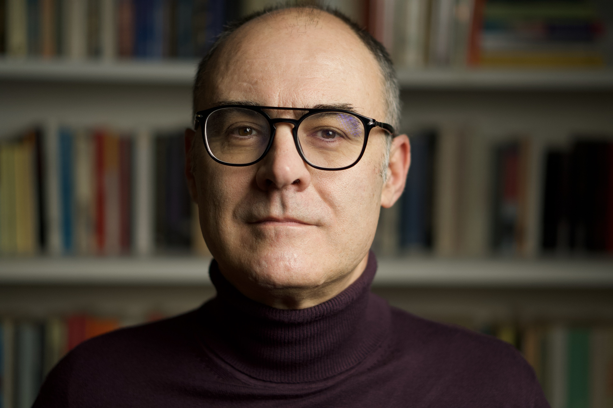

Andrea Fusiello was born in Palmanova (UD) - Italy - in 1968. He received his Laurea (Master) degree in Computer Science from the University of Udine in 1994. In 1993-94 he worked within the Computer Vision Group at IRST (now FBK), in Trento. He received the Dottorato di Ricerca (PhD) in Computer Engineering from the University of Trieste in 1999. As a PhD student he worked at the University of Udine. He had been Visiting Research Fellow at Heriot-Watt University, Edinburgh in 1999. From 2000 to 2011 he has been with the the Dept. of Computer Science, University of Verona, as Ricercatore first and Professore Associato (Associate Professor) since 2005. In 2012 he moved to the University of Udine, where he teaches Fundamentals of Computer Science, Computer Vision and Computer Graphics. In 2023 he became Professore Ordinario (Full Professor). His research research encompasses a broad spectrum of topics within the fields of Computer Vision, Photogrammetry, and Image Analysis, with a focus on 3-D modeling and reconstruction.
- Bibliometrics
- Awards
- Best Paper (Marr Prize) - Honorable Mention at
ICCV 2021
- Editorial boards
- AE of Journal of Mathematical Imaging and Vision (2023- )
- AE of IEEE Transactions on Image Processing (2020-2023)
- AE of IET Computer Vision (2013-16)
- AE of Pattern Recognition (2006-09)
- Conference organization
- General Co-Chair ICIAP23
- General Chair 3DV18
- Workshops Co-chair ECCV20 and ECCV12
- Posters Co-chair Eurographics 2019 and Eurographics 2012
- Area Chair ECCV24, CVPR25, ICCV25
- Reviewer for CVPR/ ICCV/ ECCV since 2006
- Scientific societies
- Co-chair of ISPRS WG II/1 (2016-2022)
- Senior member IEEE (2021)
- Executive board the Eurographics Italian Chapter (2006-09)
- University services
- Projects
- Principal investigator in SPATA (POR FESR 2014-2020) and 3-SHIRT (PRIN 2006) projects
- Investigator in three EU projects (FP4, FP6, FP7) and two national PRIN projects (2004, 2010)
- Participated/leaded several industry-funded projects
- Technology transfer
- Co-founder of 3Dflow srl (University spinoff).
- Two patents
- Teaching
- Full Curriculum Vitae [Italian] [English]
{kind=link}